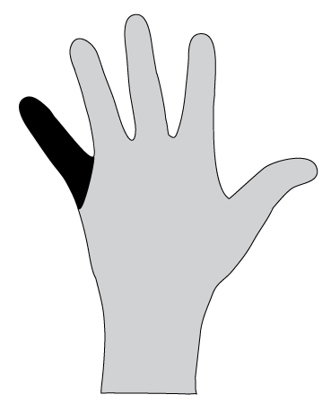

1. Dieu s'intéresse à toi
(Le pouce: le plus important)
- Dieu nous a créé pour vivre une relation d'amour avec Lui.
- Il nous fait une offre. La question est la suivante: Comment vas tu y répondre?
2. Le problème: Nous ne faisons pas ce que Dieu voudrais que nous fassions.

(L'index: Nous pointons les autres du doigt pour les accuser, mais en vrai le problème vient de nous.)
- Il y a un gros problème dans nos vie: c'est ce qu'on appelle le péché.
- Qu'est-ce que le péché? Voler, mentir, tuer,... (désobéir aux Dix Commandements). C'est le péché.
- Mais les standards de Dieu vont plus loin:
- Penser du mal de son prochain, c'est un péché.
- Si tu sais comment faire le bien mais ne le fait pas, c'est un péché.
- La racine du péché: Penser que l'on sait mieux que Dieu, l'ignorer, et refuser son amour.
- Dieu est saint et Il souhaite que l'on soit parfait.
- Imagine que l'on fasse une vidéo de tous tes péchés: toutes les mauvaises choses que tu as fais, toutes tes mauvaises pensées, et toutes les fois où tu pensait que personne ne te voyait. Comment te sentirais tu si tout cela venait à être révélé, et que les gens verraient cette vidéo?
- Dieu n'ignore aucune de ces choses, et la conséquence du péché est la punition.
- Nos péchés sont la cause de nos blessures, de notre mort spirituelle et de notre séparation d'avec Dieu.
3. La solution de Dieu: Jésus Christ a payé le prix pour nos péchés
(Le majeur est le plus long doigt: il symbolise la croix où Jésus est mort)
- Comment Dieu peut-il être un Dieu d'amour et un Dieu qui punit le péché en même temps? Comment concilier ces deux idées?
- La solution de Dieu est son fils, Jésus Christ.
- Il est venu dans ce monde, a vécu une vie parfaite, et a guéri beaucoup de gens.
- Ses ennemis l'ont arrêté, l'ont frappé, et l'ont mis à mort à la croix.
- Mais trois jours plus tard, Il est revenu à la vie!
- Il a pris nos fautes afin que nous obtenions le pardon.
- Histoire pour illustrer: Les deux jumeaux (voir au dos)
4. Dieu souhaite une relation avec nous
(L'annulaire: Une relation avec Dieu)
- Dieu a fait tout ce qu'il fallait afin que notre relation avec Lui puisse être restauré. Il nous offre une nouvelle vie éternelle en relation avec Lui.
- Maintenant c'est à toi de décider: Vas tu accepter son offre?
- Mais nous devons réaliser que cette décision aura des conséquences: cela devra nous amener à laisser notre ancienne vie derrière nous, et commencer à vivre une nouvelle vie, en suivant l'exemple de Jésus.
- Nous prenons cette décision en nous détournons de nos péchés et en laissant Jésus nous transformer.
- C'est un peu comme dire "oui" à un mariage. Quand tu dis "oui", Dieu dit "oui" aussi. Il veut te parler, prendre soin de toi, et vivre avec toi!
5. Le Saint-Esprit te soutiendra

(L'auriculaire: Il y a de la place pour grandir)
- Quand nous acceptons son offre, Dieu nous remplit de Son Esprit.
- Ce "Saint Esprit" est comme la force de Dieu en toi. Il te montre quoi faire, travaille sur tes faiblesses, et t'aide à vivre comme Jésus.
- De plus, d'autres personnes ayant le Saint-Esprit te soutiendront, t'aideront à te former et à mieux comprendre Dieu, afin qu'Il puisse se servir de toi.
Les deux jumeaux
Il y avait deux frères jumeaux. L'un d'entre eux, étant adolescent, s'éloigna du droit chemin. Il joignit un gang, et coupa les liens avec sa famille. En fin de compte, il devint un meurtrier. Durant une descente, il tira sur quelqu'un. Au tribunal, il vit son frère après de longues années. Son frère était le juge! "Super, c'est mon frère!" se dit-il. "Je pense qu'il m'aime encore. Il va me sortir de là."
Son frère, le juge, donna le verdict - peine de mort ! Son frère jumeau était furieux. "Pourquoi être si dur?!" se demanda t-il. "C'est ça l'amour?" Mais le juge se devait de faire respecter la justice.
Le jumeau condamné attendait dans le couloir de la mort, quand soudain, au milieu de la nuit, la porte s'ouvrit. C'était son frère! Au début il était en colère contre lui. "Pourquoi m'as-tu condamné à mort?" demanda t-il.
"Je n'avais pas le choix. Mais j'ai une offre pour toi. On est identique physiquement. Échangeons nos vêtements. Je vais rester ici et tu peux t'en aller."
"OK, super!" se dit le jumeau, et il sortit de la prison. Il fit la fête toute la nuit parce qu'il était tellement heureux. Mais le matin suivant, il se rappella, "Attends une second, l'éxécution était prévu à 9h ce matin." Il se dirigea vers le mur de la prison, quand soudain il entendit un coup de feu! C'est alors qu'il compris que son frère avait pris la faute à sa place.
Il était alors complètement désespéré. Il alla rendre visite à la maison de son frère, où il trouva une lettre lui étant destiné. Il lut,
" Tu es libre. J'ai pris ta condamnation. Je veux que tu vive ma vie à partir de maintenant, que tu sois honnête, et que tu te souvienne de ce que j'ai fait pour toi."
Ma réponse à l'offre de Dieu
Dieu a fait sa part. Maintenant c'est ton tour...
- Ai-je accepté son offre?
- □ Oui □ Non □ Je ne sais pas
- Suis-je certain d'avoir la vie éternelle?
- □ Oui □ Non □ Je ne sais pas
- Me suis-je détourné de mes péchés et du mauvais chemin?
- □ Oui □ Non □ Un peu
- Suis-je certain d'avoir reçu le Saint-Esprit?
- □ Oui □ Non □ Je ne sais pas
Qu'est ce qui me retient?
Qu'est ce que je n'ai pas compris? Où est-ce que j'ai un doute?
Parler avec Dieu: Mes prochains pas
Voici quelques conseils pour avoir une conversation avec Dieu. Tu peux ajouter tout ce que tu as sur le cœur et que tu souhaite dire à Dieu. Si tu n'es pas sûr de toi sur certains points, tu peux aussi le Dieu honnêtement à Dieu. Demande l'aide de quelqu'un qui a l'habitude de parler avec Dieu.
Dieu, quelles choses dans ma vie ne sont pas comme tu le voudrais? Quels sont les péchés auxquels je dois renoncer?
Dieu, je te remercie de pouvoir parler avec Toi. je réalise que je n'ai pas vécu selon Ta volonté. Je te prie de me pardonner pour avoir ___________________ (nomme ce que Dieu te montre)
Jésus, je te remercie que tu as offert une solution et que tu sois mort pour moi. Je suis prêt à changer de vie et à me débarrasser de tout ce que tu considère comme péché. Je veux vivre en accord avec Ta volonté.
Saint Esprit, je te prie de m'aider. Purifie moi et remplis moi.
Si tu peux dire tout cela du fond de ton cœur alors laisse quelqu'un t'expliquer comment commence cette nouvelle vie (voir la fiche "Baptême").